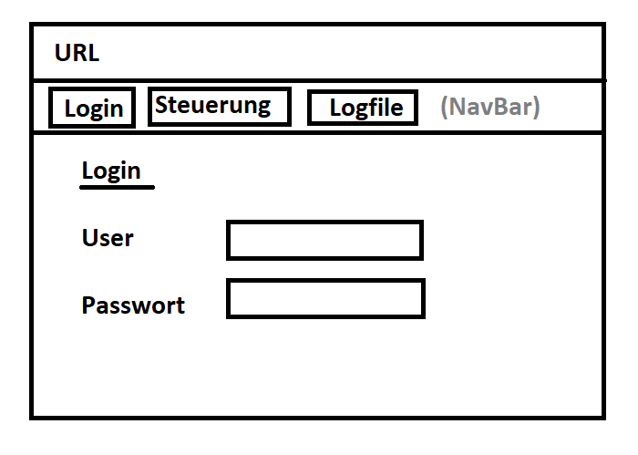
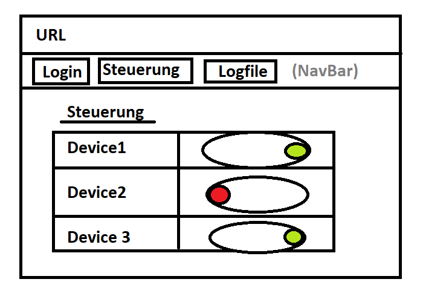
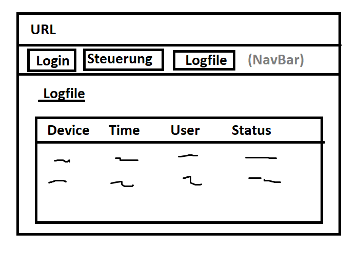
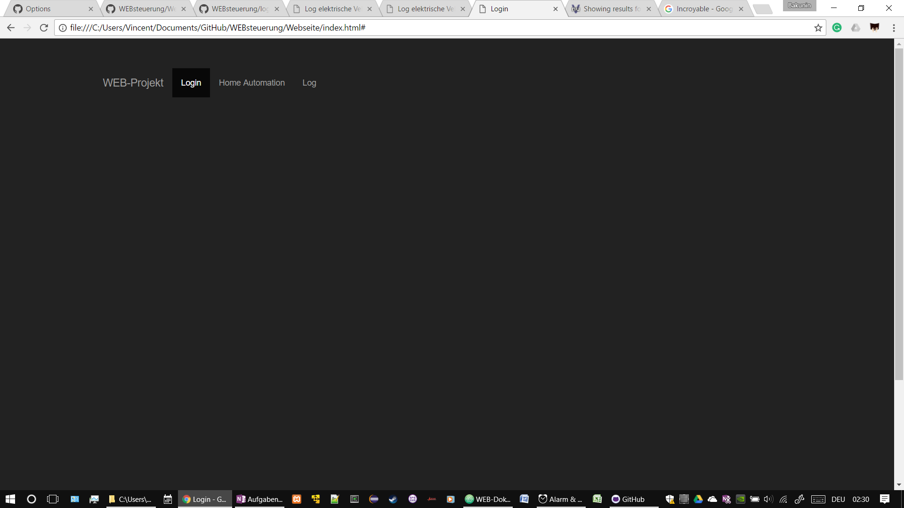
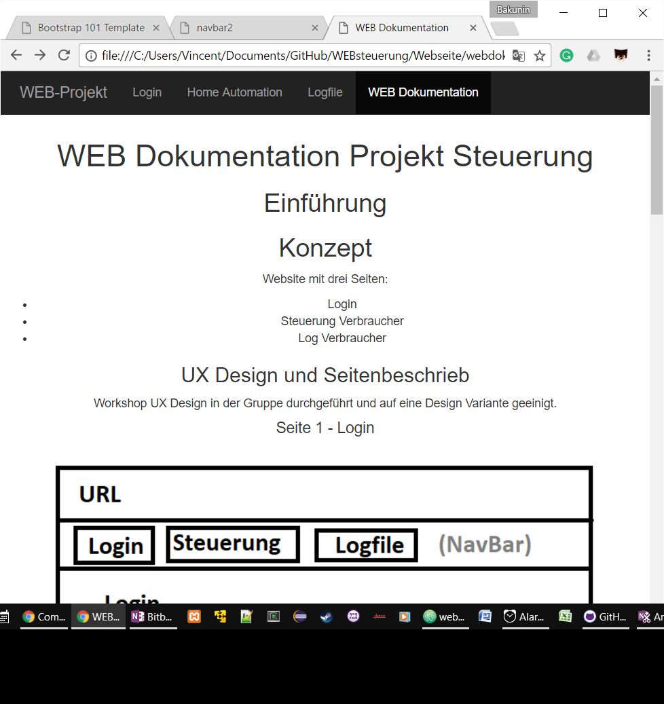

Dieses Projekt soll uns die Möglichkeit geben eine eigene Idee umsetzen.
Webauftritt mit drei Seiten erstellen:
Login
Steuerung Verbraucher
Log Verbraucher
Workshop UX Design in der Gruppe durchgeführt und auf eine Design Variante geeinigt.
Login Seite mit Benutzer Authentifizerung. Um die Komplexität zu reduzieren wird die Benutzerauthentifizeirung nur lokal vorgenommen und nicht via Facebook-Account oder eigener Account-Management Lösung realisiert.
Da wir JavaScript etwas angeschaut haben Benutzen wir JavaScript Befehle um vom Benutzer den Namen und ein Passwort abzufragen. Diese Daten speichern wir dann nur für die Benutzung im Log Seite 3.
Auf der zweiten Seite, dem Herzstück, sollen die elektrischen Vebraucher mittels einer interaktiven Steuerung einzelne Devices ein- und ausschalten können.

Auf der letzten Seite, sollten die gemachten Einstellungen der Devices in einer Tabelle dargestellt werden.

Das Journal wird durch die Git Commits geführt. Das bedeutet die Kommentare sollen
entsprechend genügend Informationen enthalten.
Link zu den Git Commits
| Ordner | Unterordner | Dateien | Beschreibung |
|---|---|---|---|
| //Webverzeichnis | /images | .jpg, usw. | Ablage aller Bilder welche verwendet werden. |
| //Webverzeichnis | /styles | .css | Stylesheets zur Formatierung der Seiten werden hier abgelegt. |
| //Webverzeichnis | .html, usw. | Die hmtl Dateien, sprich die Seiten werden direkt im
Webverzeichnis abgelegt. Best Practice? Ein Ordner für html im //Webverzeichnis? |
Dieser Abschnit beschreibt kurz wer für welchen Bereich zuständig war.
| Habte | Vincent |
|---|---|
| Habte: Seiteninhalt html und Buttons JavaScript |
Vincent: NavBar via Bootstrap Gemäss Anleitung: http://holdirbootstrap.de/komponenten/#navbar |
Optional wenn Zeit reicht:
local storage zu benutzen mit JSON.stringify('JS-Object') zum umwandeln
von JavaScript-Objekt zu einem String JSON.parse(localStorage.item)
zum umwandeln eines Item's zurück zu einem JavaScript-Objekt.
Für die implementierung von Bootstrap wurde die "Inverted NavBar" Standardkonfiguration
von folgenden diesem Link verwendet.
Für die Seiten Home Automation, Logfile und WEB Dokumentation liess sich das Template verwenden.
Bei der Seite Log (index.html) welche als erste Seite aufgerufen werden sollte und als
Login-Seite dient, liess sich das Bootstraptemplate nicht implementieren ohne
das der JavaScript Code, welcher für die aktuelle Loginautenthifizierung verantwortlich ist, nicht mehr ausgeführt wird.
Aus diesem Grund konnte das Design nicht auf allen Seiten angewendet werden.

Theorie was der Code <html lang="de"> bewirkt.
Dieser html Tag Abschnitt bestimmt ob Google Chrome vorschlägt die Seite zu
übersetzen. Beispiel aktuelle Seite WEB Dokumentation.
